Seventy-five years, three generations, one family.
Sri Manjunatha Jewellers stands today as a testament to dedication, tradition and resilience. For over seven decades it has served Bengaluru from Malleswaram with handcrafted gold, silver and diamond jewellery — and its story begins with one man's vision and sacrifice.
From the voice of Mrs Suchitra Lotlikar, Proprietor
1951Workshop at 40/5, 8th Cross
Where It All Began
A small workshop. A single counter. A family’s first step into jewellery.
In 1951, Mr. Bhaskerrao Shet founded a small workshop at 40/5, 8th Cross, Malleswaram. Jewellery was made by hand and sold directly from the workshop — laying the foundation for what would become a three-generation family business.
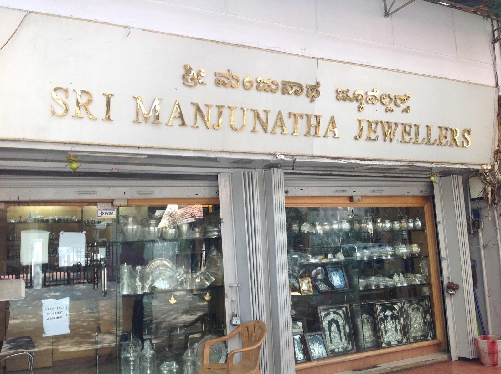
1986to 1996
The Next Generation
1986 The family grows
As demand and reputation grew, his elder sons, Mr B Mahendra Lotlikar and Mr B Harish Lotlikar, joined in. They handled retail while their father continued to make jewellery in the workshop, and this family effort let the business widen its reach and offerings.
In 1986 tragedy struck when the founder passed away from a heart attack. But the business he built was resilient. His third son, Mr B Udaya Kumar Lotlikar, entered into partnership with Mr B Mahendra Lotlikar, while Mr B Harish Lotlikar branched off to open his own store in Subramanyanagar.
The original space was divided into two retail sections — one for gold, one for silver — and a smaller workshop moved to the rear of the store, where two skilled artisans carried on the handcrafted production and the legacy of handmade work.
1996 A husband and wife behind the counter
In 1996 Mrs Suchitra Lotlikar married Mr B Udaya Kumar Lotlikar and became actively involved in running the silver side of Sri Manjunatha Jewellers, while her husband and Mr B Mahendra Lotlikar looked after gold.
By around 2003 Mr B Mahendra Lotlikar had fully separated his operations and opened his own outlet on 7th Cross. The original location continued as the core of Sri Manjunatha Jewellers, the lease now solely in Mr B Udaya Kumar Lotlikar's name. From 2003 Suchitra committed full time to the silver side while her husband focused on gold.
At the gold counter of the 8th Cross shop in 2005
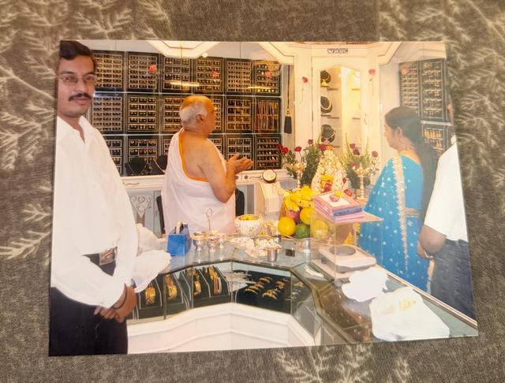
Customers at the gold counter of the old shop in 2005
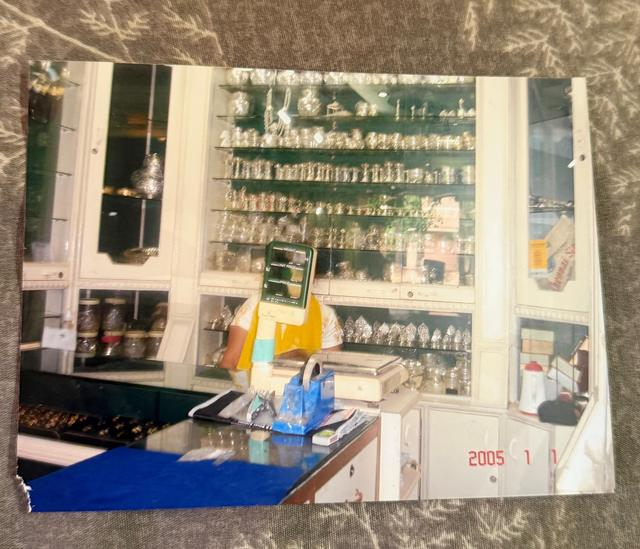
The silver counter of the old shop, photographed in January 2005
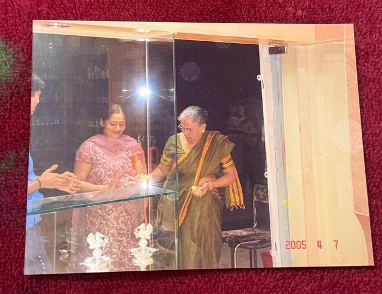
A customer at the counter in 2005
2005A single, air-conditioned showroom
Rebuilt With Resilience
A fire changed the showroom. It didn’t end the story.
In late January 2005 a short circuit triggered a fire that caused extensive damage. The dividing wall between the two sections collapsed and the premises were badly damaged. The family moved temporarily to a nearby shop while rebuilding took place at the original site.
A couple of months later construction was complete, and Sri Manjunatha Jewellers reopened with a grand opening in a beautifully renovated, air-conditioned showroom — a single unified space, upgraded for modern retail while keeping its heritage.
Reconstruction of the shop after the 2005 short-circuit fire
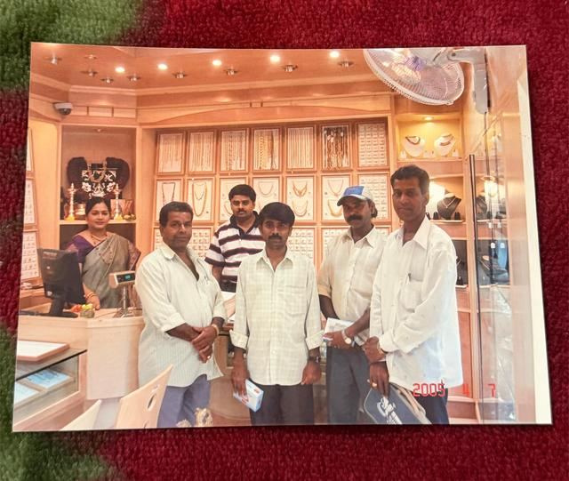
The carpenters who built the new showroom after the fire
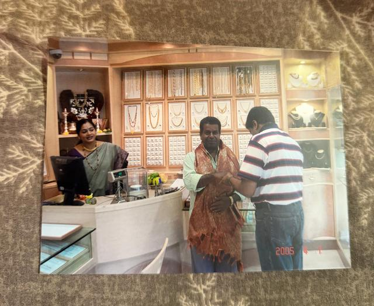
Carpenters at work on the rebuilt showroom counters
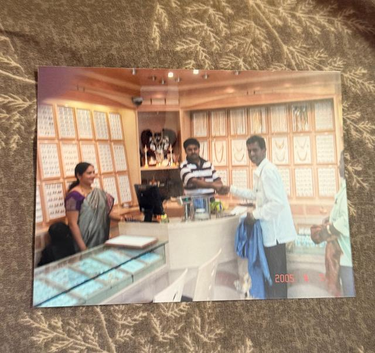
The rebuilt showroom nearing completion with its carpenters
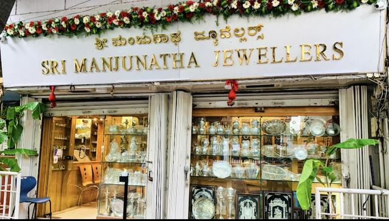
The shopfront after reconstruction, reopened in 2005
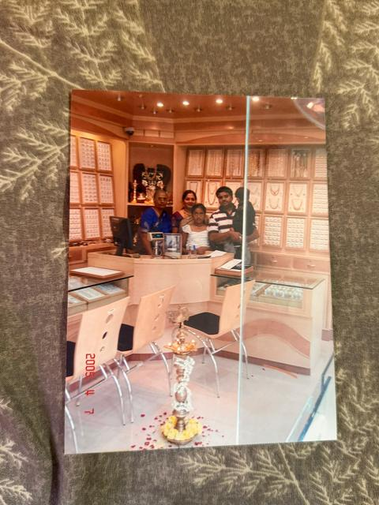
Inside the renovated, air-conditioned showroom after reconstruction
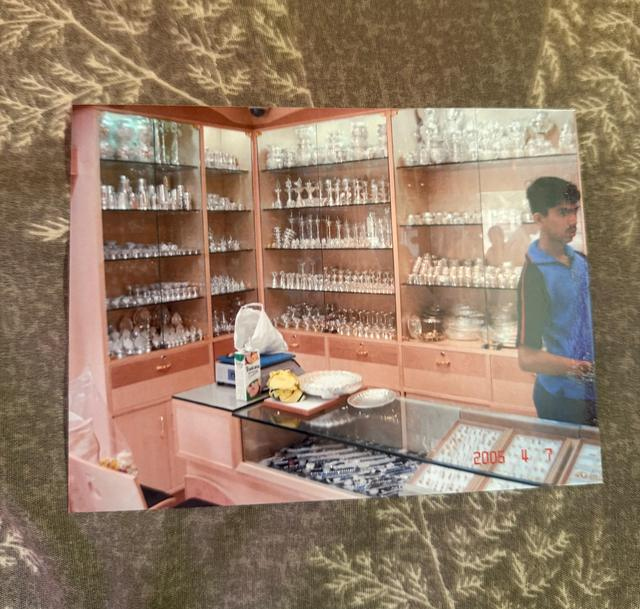
The silver section of the renovated showroom
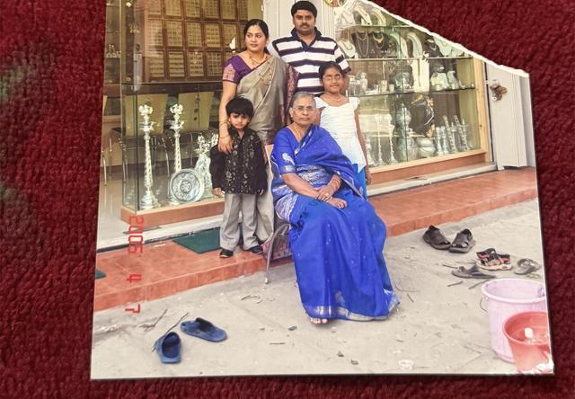
Outside the shop on 8th Cross after it reopened
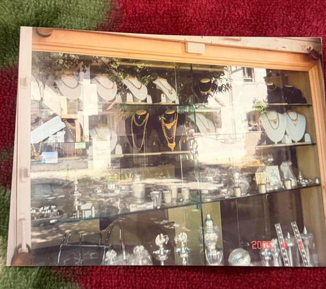
Silver jewellery and articles in the rebuilt display cases
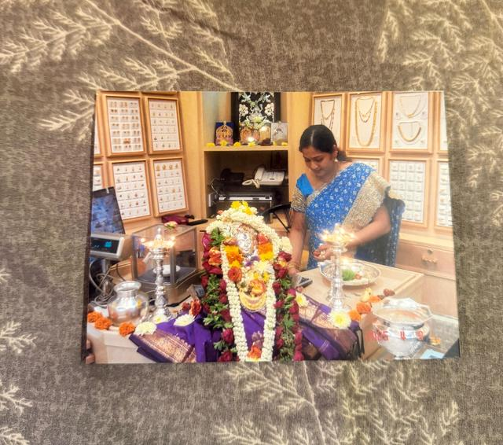
Pooja at the counter for the reopening
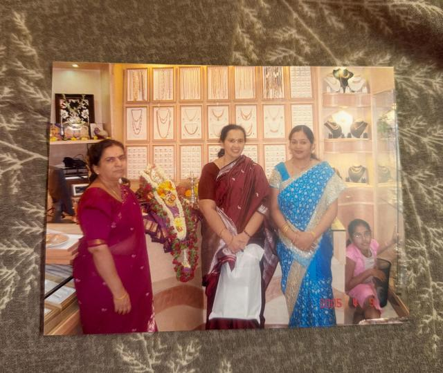
Family and customers at the reopened showroom
2019A new generation
A New Generation Takes Responsibility
In July 2019, after the passing of Mr B Udaya Kumar Lotlikar, who had held the lease and run the business through the preceding years, Mrs Suchitra Lotlikar took on the responsibility of carrying the family business forward. The landlord, Mr Mohan G.N., graciously reissued the lease in her name; she became sole proprietor and registered the business under GST.
The loss brought hardship, challenges and obstacles, but the family's dedication to the legacy stayed strong. She took over with a mindset of growing the business to heights the next generation could thrive on. Her son, Mr Mayur Lotlikar, joined the business as Branch Head & Manager.
Mr B Udaya Kumar Lotlikar at the counter during his proprietorship
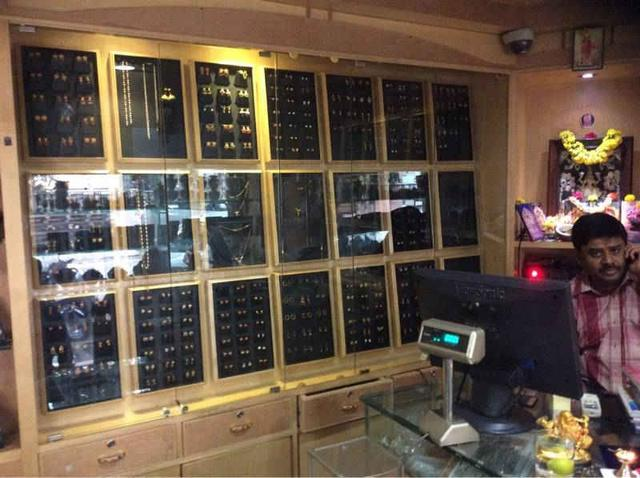
Behind the gold counter of the 8th Cross showroomMrs Suchitra Lotlikar at the counter after taking over as proprietor
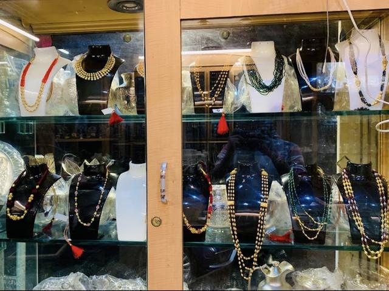
Necklace display cases in the 8th Cross showroom
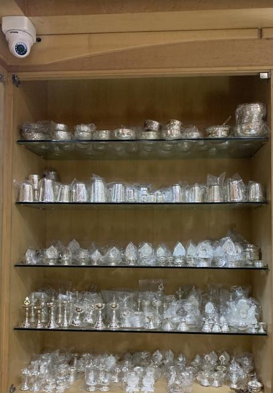
Shelves of silver articles in the 8th Cross showroom
2024A unit of Sri Manjunatha Jewellers
A New Chapter
Mayur Abharan — the family’s heritage takes a new form.
In August 2024 the family opened Mayur Abharan at 31, 16th Cross, 11th Main, Malleswaram — the vision of Suchitra’s daughter, Malavika Lotlikar, to carry the family’s heritage into a new store.
Sri Manjunatha Jewellers has now moved into a bigger space at #25, 9th Cross, 4th Main, Malleswaram, next to Balaji Stores. It has been operating for over 75 years, bridging three generations of family labour, love and determination — and it continues, stronger in spirit, rooted in craftsmanship, and determined to endure.
The new showroom decorated with marigold and jasmine garlands for its opening in 2026
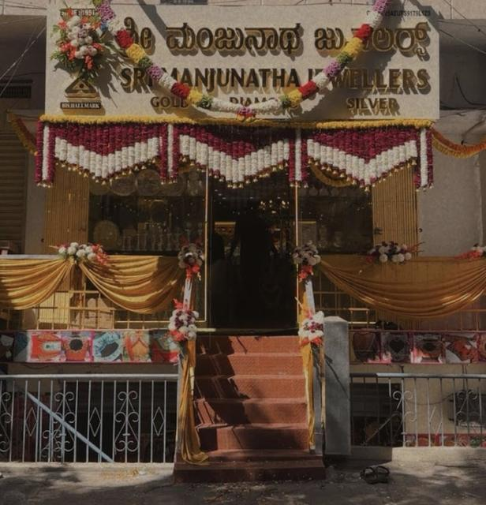
Entrance of the new showroom on 9th Cross dressed in flowers and silk drapes for the opening
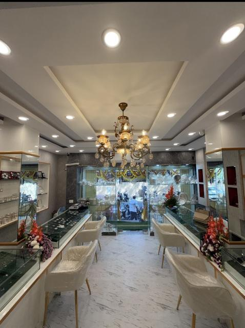
Inside the new showroom: glass counters along both walls under a crystal chandelier
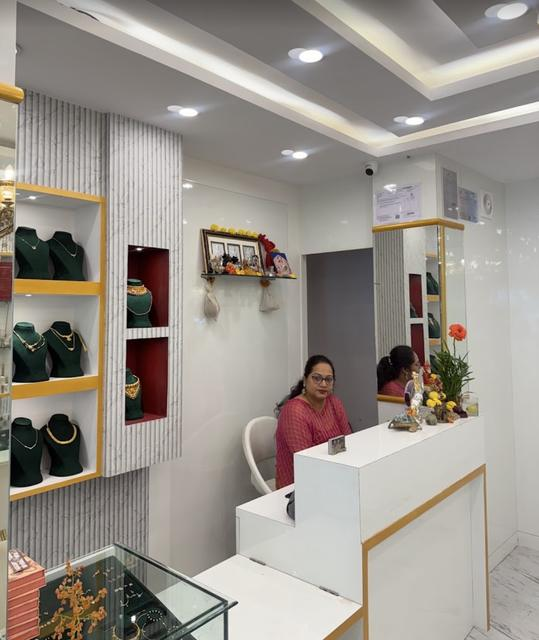
The billing desk and necklace display niches in the new showroom
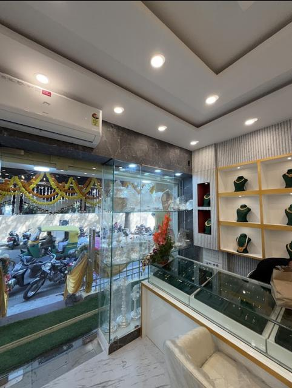
Counters and display niches looking out through the glass front of the new showroom
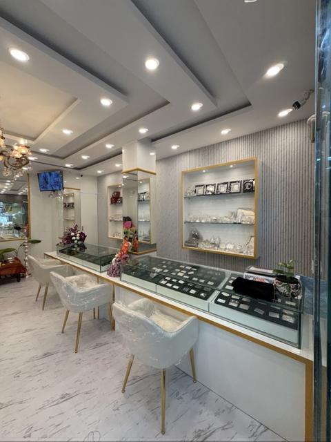
Long glass counter with seating in the new Sri Manjunatha Jewellers showroom
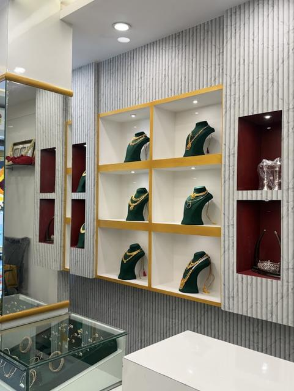
Gold-framed display niches holding necklace sets on green busts
The family
The people behind the counter.
BS
Mr. Bhaskerrao Shet
Founder · 1951
UL
Mr. B. Udaya Kumar Lotlikar
Proprietor
SL
Mrs. Suchitra Lotlikar
Proprietor
ML
Mr. Mayur Lotlikar
Branch Head & Manager
ML
Ms. Malavika Lotlikar
Founder, Mayur Abharan
Valued patrons
Customers who became family.
Five well-known people who have been customers and well-wishers of the business over the years. Tap a photograph to see it larger.
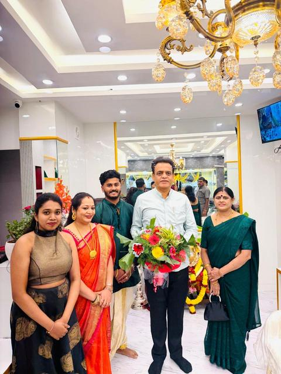
Dr C N Ashwath NarayanFormer Deputy Chief Minister of Karnataka and MLA — a valued customer of the business.
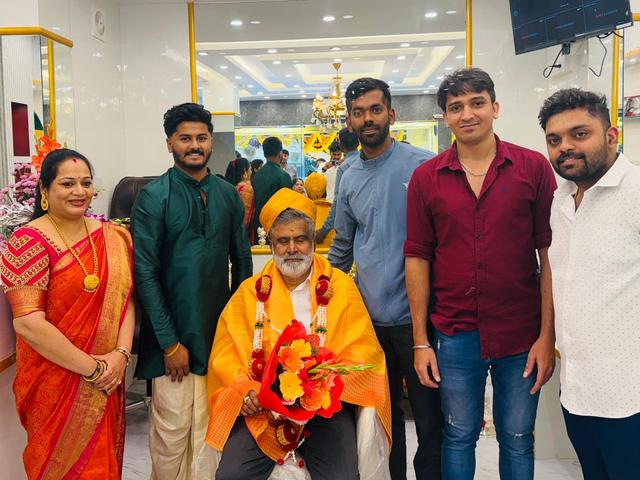
Mr B Suresh GowdaA well-known Malleswaram figure and a customer for nearly two decades.
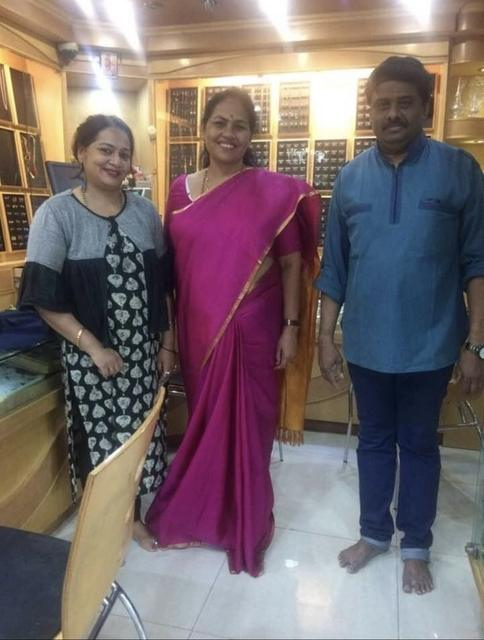
Smt Shobha KarandlajeMember of Parliament, pictured at the store during Mr B Udaya Kumar Lotlikar's proprietorship.
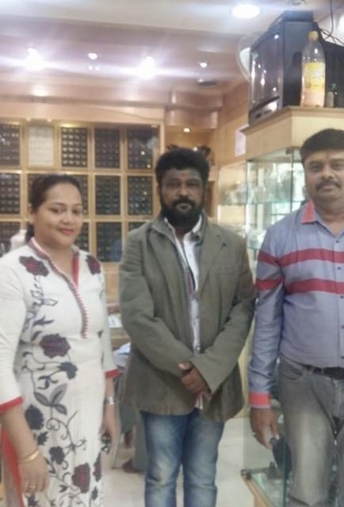
JaggeshKannada film actor, pictured at the store.
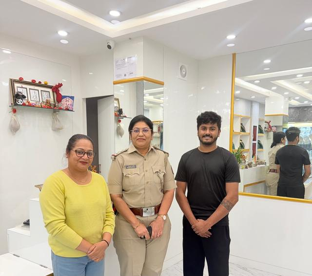
Mrs Bhagyavathi BantiCircle Inspector, Malleswaram police station, on a visit to the store.
With gratitude
It takes a community.
The key part of the business is the customers who have been with us since my father-in-law's time, the wholesalers who generously continue to provide us with stock, the goldsmiths who craft beautiful jewellery, the new customers who come to us with trust, and the family that runs the operations.
It is all of these that make Sri Manjunatha Jewellers grow, run and operate smoothly. Our gratitude to this community remains strong — and the business will continue to thrive as a family-owned, generational jewellery house.
Reflections & legacy
You may see just the shining ornaments behind the glass. But I see the years of manual labour, the risks taken to make this business a legacy, the fires battled, the sudden losses, and the quiet but constant faith that kept the doors open.
Mrs Suchitra LotlikarProprietor, Sri Manjunatha Jewellers
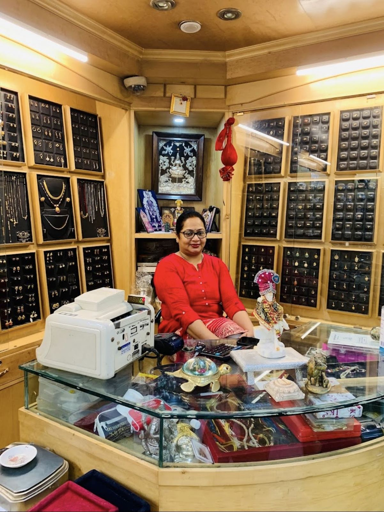
From that tiny workshop in 1951 to a modern showroom today, Sri Manjunatha Jewellers is more than a jewellery store. It is a chronicle of sacrifice, family bonds and artistic dedication — every gold necklace, silver anklet or diamond ring carries a lineage of the hands that shaped it. Our hope is that it remains a symbol of heritage, and of the strength and dignity of a family's dreams.